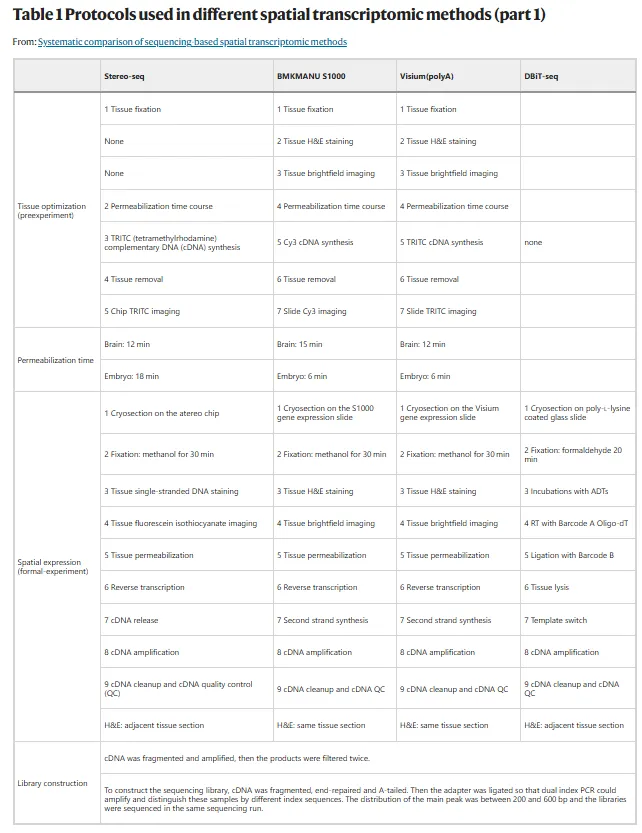
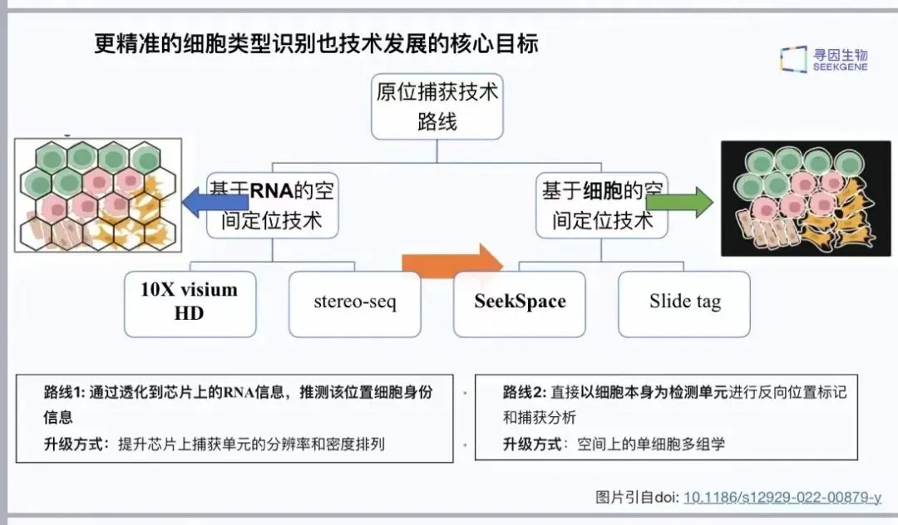
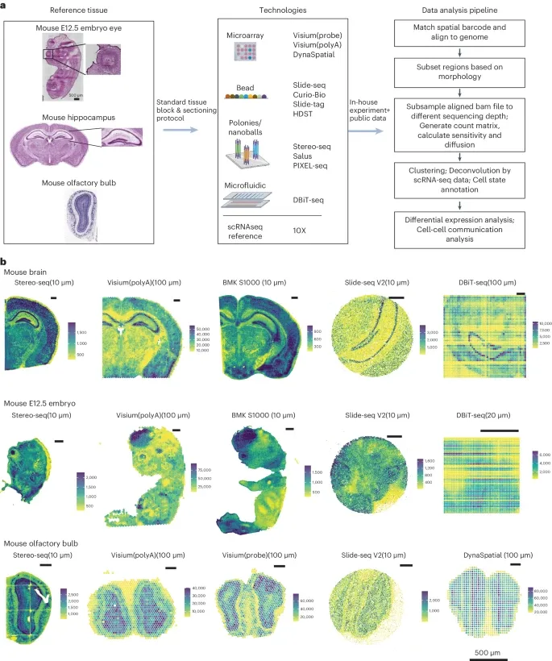
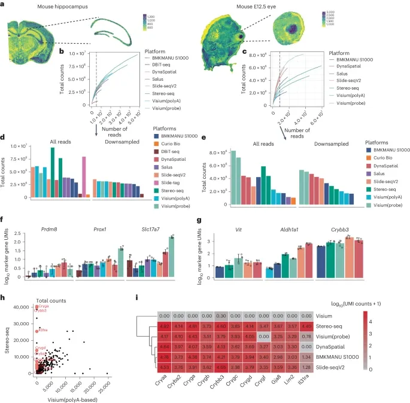
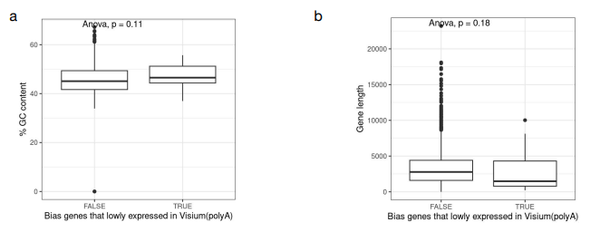
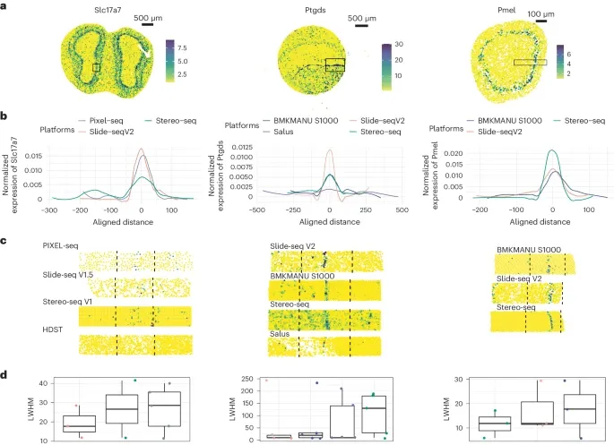
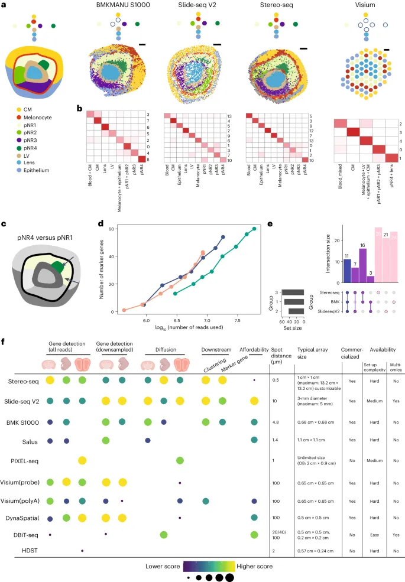
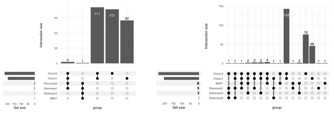

《Nature Methods》教你如何挑选空转平台
原文：https://mp.weixin.qq.com/s?__biz=MzAwMzIzOTk5OQ==&mid=2247520891&idx=1&sn=147d185643bd5dbba4e58b20b2eed872&chksm=9b3ceb2bac4b623d0273eb53b44709e951a493d79338d622b07e256cb4bf385c7d77983e7f48#rd 合集：单细胞教程全收录 / 空间转录组 / 文献速递
一、写在前面
空间转录组技术的革命性地位无需多言(毕竟2020年度的Nature Methods年度技术)，我们在此前介绍过空转的主流策略(《Nature》经典综述：空间转录组学探索组织结构)，其中sequencing-based spatial transcriptomics(sST)便是一种。不同来源的单细胞 数据通过去批次 等操作尚可整合分析，而不同平台的sST由于分辨率、转录本丰度、建库策略的不同往往很难联合分析(我们也分享过好分析的：SeekSpace| 会单细胞就会空间转录组)。应对各式各样的sST平台，作者评估了11种sST的多种组织(小鼠胚胎、眼睛、海马区、嗅球)的各项指标 ：分子扩散效应、有效分辨率、测序深度、细胞状态与marker的捕获能力等。显然不同的sST在聚类、细胞间通讯等分析上的性能有所不同，作者希望能帮助大家选择合适的sST平台 ，并且为空转分析计算工具提供一个发展和基准管理的金标准。如果你在空转平台挑选上有困难症，不妨看看我们以前的分享(当空转遇上单细胞~)，也可以扫码获得更多空间转录组资料与技术支持：
二、主要结果
1、数据基本情况 作者将sST技术分为了几类：基于微阵列(10X Genomics Visium、DynaSpatial)、基于磁珠(HDST、BMKMANU S1000、Slide-seq V2、Curio Seeker、Slide-tag)、基于纳米球(stereo-seq、PIXEL-seq、Salus)、微流控(DBiT-seq)，大家可以参考下面的table1：

但其实与其在sequencing-base中比分辨率或是在image-base里比通量，都不如直接上单细胞空间转录组来的实在。那么问题来了，现在有没有真正的单细胞分辨率的空转平台 呢，当然有的：SeekSpace| 会单细胞就会空间转录组。区别于上面这些基于RNA的空转技术，SeekSpace是一个基于"细胞"的空转平台：通过将芯片位置标签反向标记 到细胞核的操作，能够成功让核RNA带上空间位置标签(5.5 x 15mm的芯片上包含约3000万种标签簇，每个标签簇的直径为900nm，标签簇中心点的距离为1.5μm，基本可以达到亚细胞水平)。此后再进行细胞核的单细胞文库构建，自然而然就获得了"单细胞空间"转录组数据。


Seekspace技术路线
作者选取了成年小鼠大脑、E12.5小鼠胚胎、成年小鼠嗅球这类有明确形态特征的样本作为参考组织(Figure 1a)。成年小鼠海马体厚度一致，包含CA1~3、齿状回等区域，表达特征鲜明。胚胎的E12.5种鼠眼表现出已知结构，晶状体被神经元视网膜包围且可观察。作者接着对空间barcode对应位置、表达矩阵进行了可视化，展示了各sST每个spot的counts数(Figure 1b)，可以看到，随着spot大小 及spot距离 之间的差异，counts随之变化。其中stereo-seq、BMKMANU S100、Salus的spot间距低于10μm ，因此把它们分bin为10μm大小参与分析。这些技术均能够获得完整的右脑和E12.5胚胎，捕获区域大约在1cm至13.2cm 区间。相比之下，Slide-seq V2智能捕获到部分区域，而DBiT-seq的捕获大小取决于微流体通道的宽度。接下来，作者选择了形态学已知的组织结构进行了下采样(减少测序深度带来的变量)，例如鼠脑中的海马体、E12.5胚胎中的眼部。

Figure 1
2、分子捕获效率
作者通过组织模表达式、H&E提供的形态学信息分离出对应区域(Figure 2b)，在每种sST选取相同的组织，这样能去除对应组织在样本内位置信息带来的影响。作者通过两种方式来评估分子捕获效率：在相同的区域内，统计所有的reads(1)、下采样不同的样本，使其拥有相同的reads数。基于下采样结果，大约300w 的reads(10X Visium)至40亿 的reads(stereo-seq)可以达到饱和(Figure 2b,c)，可以看出分辨率越小，sST就需要更多的reads。作者对选择区域的total counts进行了考察，在下采样前stereo-seq在相同的区域内包含更多的counts与reads(Figure 2d,e)。在下采样后，即使10X Visium的测序深度只有stereo-seq的一半，在鼠眼中前者也有更多的total counts，即基于探针的10X Visium捕获效率更高。但当测序深度限定的情况下，Slide-seq V2展示出了更高的敏感性(Figure 2b,c)。为了考察各sST平台的敏感性，作者查看了下采样数据特定区域的marker gene。在海马体的CA3中，作者比较了Prdm8、Prox1、Slc17a7在50μm X 50μm区域的总counts数，10X Visium、Slide-seq V2、DynaSpatial展现出了最高的敏感性(Figure 2f)。视网膜神经元的marker Vit、Crybb3、Aldh1a1也展现出一致的趋势(Figure 2g)，可以看出基于探针 的sST对于基因的敏感性更高 。值得注意的是，以polyA为探针的10X Visium明显展现出了对基因GC含量 以及序列长度 的偏好性(Figure S11)。
值得一提地是，在SeekSpace的实例数据中，可以做到在无单细胞转录组 数据辅助(这真的会较少很多的分析成本)的情况下直接基于每个细胞的位置标签，溯源reads的空间定位信息。由于SeekSpace已经是"单细胞"水平的空转，其在空间上能对不同组织的细胞进行精准定位(有助于特定脑区边界、特殊细胞类型与标志物检测、细胞近距离互作方面的研究)，同时也能够提供丰度足够 的转录本信息(UMI中位数 即文中的total counts约1500)完成降维、分群操作。事实上，基于RNA的的空转平台由于RNA扩散效应、细胞划分不清晰，往往需要更多的UMI才能够完成对细胞身份的确定。 SeekSpace与"基于RNA的空间技术与"UMI注释情况对比
SeekSpace与"基于RNA的空间技术与"UMI注释情况对比

Figure 2

Figure S11 3、分子扩散效应 mRNA检测的准确性是一个无论在sequencing-base的空转还是在image-base的空转中都值得关注的问题。去了探究各sST的扩散效应，作者绘制了特定基因在区域内的密度、量化所选区域强度的左半最大值宽度之间的距离(LWHM)。在小鼠嗅球数据中，作者选取了二尖瓣和丛状细胞中特异性表达的Slc17a7，通过原为杂交与sST(Figure 3a)互相矫正。结果显示stereo-seq 相较于Slide-seq V2与BMKMANU S1000相比具有明显的扩散效应 ，而脑部的Ptgds与眼部的Pmel同样支持这一结论(Figure 3b-d)。不过话说回来，SeekSpace利用反向渗透，实则是避免或弱化了RNA扩散效应，毕竟细胞的大小要比亚细胞分辨率spot的大小要大上许多。

Figure 3
4、聚类与注释
观察总体counts和单个基因的表达并没有生物学参考意义，大家投掷重金 做空转是为了拿到细胞注释信息从而进行更高阶的分析。作者对E12.5的小鼠眼部通过聚类 的方式进行了细胞亚群划分，可以看到10X Visium 获得的细胞群体数量要明显小于 BMKMANU S1000、Slide-seq V2以及stereo-seq(Figure 4a)，其中Slide-seq V2以及stereo-seq获得了所有亚群的注释。可以看到眼球结构分明，在除了10X Visium的数据中均可以看到清晰的组织层次，例如晶状体和晶状体囊泡。作者同样使用下采样来观察各sST平台分群的稳定性，可以看到不同的细胞类型稳定性其实不尽相同，晶状体和晶状体囊泡、四种视网膜神经元的稳定性较高(Figure 4b)。

Figure 4
5、marker gene检出
对下采样数据的聚类结果分析表明，即使测序读数较少，一般细胞亚群仍然可以被检出。然而，似乎有一些子集，特别是那些具有相似表达谱的子集，对区分细胞亚群来说是一个挑战。为了进一步研究下采样的影响，作者选择了两对细胞子集来比较表达谱相对相似的细胞子集和表达谱相对不同的细胞子集的检测性能。作者在两种情况下进行了标记基因检测，以鉴定标记基因:pNR4与pNR1、晶状体和黑色素细胞(Figure 4C)，可以看到随着reads数的增加 ，marker gene的数量随之增加(似乎不用研究也知道)，这时Slide-seq的敏感性 就是一个巨大优势(Figure 2d)，有趣的是，各sST平台间交叉 的marker gene数量较少(Figure 4e)。细胞通讯 的结果与marker gene一样，各个sST平台间检测到的配受体对的交叉程度较小(Figure S27)。

Figure S27
在这一项上，基于"cell"的SeekSpace也被证明能够比基于"RNA"的空间定位技术相比识别稀有细胞类型、marker能力更强，能够更清晰 地区分丘脑区兴奋性神经元和星形胶质细胞地定位。这意味着SeekSpace能够完善组织内的细胞类型种类，有助于发现组织中的稀有细胞类型 。从研究思路上，可以从"脑疾病风险基因突变、调控机制"、"神经元信号交互与传递异常"、"神经胶质细胞功能与变化"、"脑肿瘤机制和标志物发现"、"脑损伤与修复机制"。
三、最后聊聊
评估空间转录组学方法比评估scRNA-seq方法更困难：首先，很难获得或模拟出空间转录组学的参考组织(需要具有明确细胞类型和基因表达模式)；其次，空转的各平台分辨率不统一，对于Visium (polybased和probe-based)和DynaSpatial等方法，斑点的直径大于50 μm，而对于像Stereo-seq这样的方法，spot的大小是亚微米，比单个细胞小得多。作者评估了11种sST的分子捕获效率、分子扩散效应、聚类与注释、marker gene检出等方面的性能。不难发现的是每种sST与其它技术之间均存在着较大的差别，彼此检出得marker gene、细胞类型、细胞通讯通路均存在较大得差异；各位可以按照这些特点各取所需，选择适合自己的空转平台。如果你在分辨率选择、分子扩散效应、分析流程学习等方面纠结，不妨看看：当空转遇上单细胞~

如何联系我们

 公众号后台消息回复不便，这里给大家留一下领取资料及免费服务器(足够支持你完成硕博生涯的生信环境)的微信号 ，方便各位随时交流、提建议（别问在么，添加时直接说来意）。此外呼声一直很高的交流群 也建好了，欢迎大家入群讨论：
公众号后台消息回复不便，这里给大家留一下领取资料及免费服务器(足够支持你完成硕博生涯的生信环境)的微信号 ，方便各位随时交流、提建议（别问在么，添加时直接说来意）。此外呼声一直很高的交流群 也建好了，欢迎大家入群讨论：
大家可以阅读完这几篇之后添加给生信入门初学者的小贴士 如何搜索公众号过往发布内容

 您点的每个赞和在看，我都认真当成了喜欢
您点的每个赞和在看，我都认真当成了喜欢